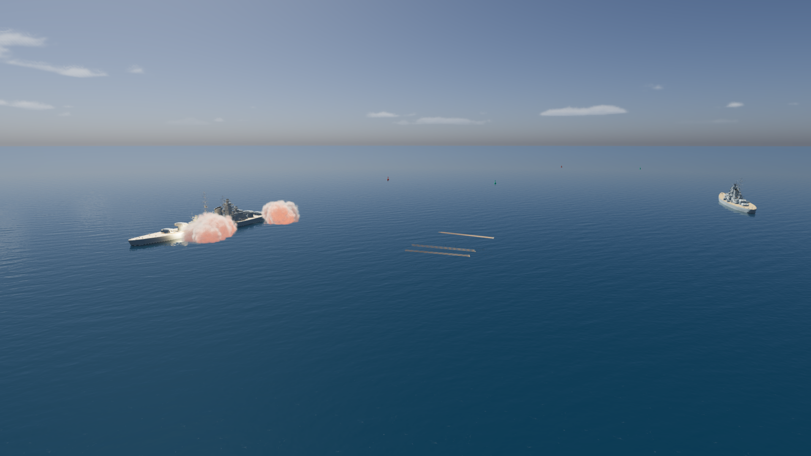
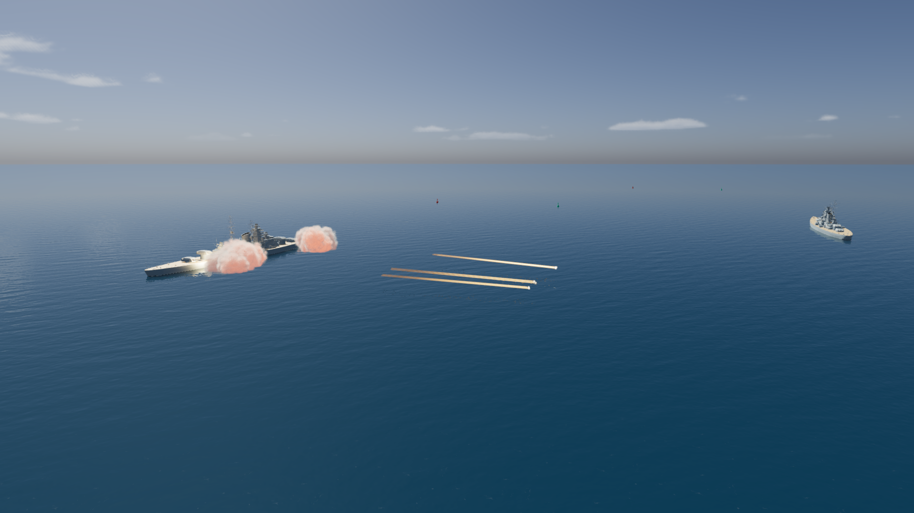

More subtle shells and tracers
Smaller glowing tips, thinner and shorter amber trails. Compare the same frozen salvo from the game renderer.


BeforeAfter
Move the slider or select Before / After. Bismarck, 0.4 seconds after firing. Actual 1920 × 1080 captures; camera, shell positions and combat state are identical within each pair.